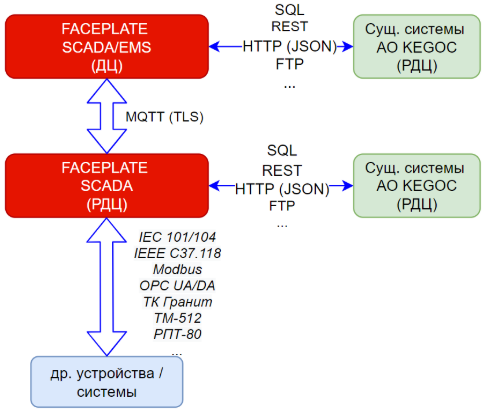
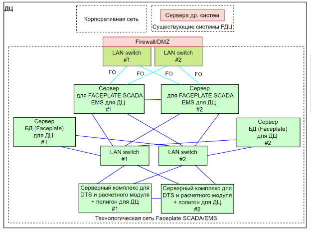
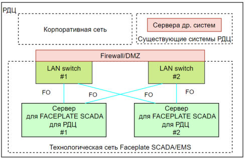
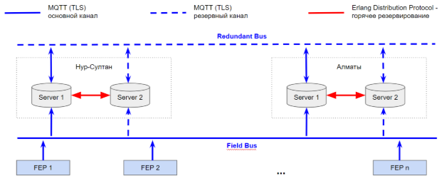

Faceplate Core – встроенная СУБД ECOMET реализована на принципах non-SQL хранилищ и специально оптимизирована для работы с большими объёмами технологических данных\. Она обеспечивает высокую скорость записи, эффективный доступ к архивам и масштабируемость при длительном хранении информации\.
Faceplate Studio - интегрированная среда разработки, предоставляющая полный набор инструментов для:
проектирования интерфейсов человеко-машинного взаимодействия (HMI),
создания алгоритмов управления,
настройки архивирования и генерации отчётов,
конфигурирования систем сигнализации, оповещений и других компонентов.
Поддерживает визуальное моделирование, использование шаблонов и встроенный скриптовый язык для расширения логики.
Faceplate Runtime - среда исполнения в реальном времени, реализующая функции автоматизированной системы управления (АСУ)\. Обеспечивает выполнение логики управления, обработку событий, визуализацию мнемосхем и взаимодействие с внешними источниками данных\.

Рисунок 2. Архитектура взаимодействия компонентов FACEPLATE SCADA/EMS с внешними системами и устройствами
где:
Компонент FACEPLATE SCADA (FEP+SCADA) представляет собой программно-аппаратный сервер, выполняющий функции сбора, обработки и передачи телемеханических данных, аналогично роли центральной приёмо-передающей станции (ЦППС)\. Он применяется в диспетчерских пунктах различного уровня, в том числе на уровне Региональных диспетчерских центров (РДЦ)\.
Основные функции FACEPLATE SCADA:
Приём данных с подстанций (ПС) в зоне ответственности РДЦ;
Обработка и агрегация телеметрической информации;
Ретрансляция данных в Национальный диспетчерский центр (НДЦ СО);
Локальная визуализация информации для операторов (режим SCADA);
Хранение данных в краткосрочном архиве (несколько суток или месяцев, в зависимости от конфигурации памяти).
Наличие локального SCADA-функционала позволяет операторам РДЦ отслеживать текущие параметры подведомственных объектов, а также получать информацию от соседних регионов даже при временном отсутствии связи с НДЦ. Это обеспечивает высокую отказоустойчивость и оперативность управления.
Модуль FACEPLATE SCADA/EMS — это расширенный вариант сервера FEP+SCADA, дополненный функциями энергетического управления (EMS)\. Он включает:
Полный функционал FACEPLATE SCADA;
Подсистемы анализа и расчёта режимов;
Инструменты оптимизации управления энергосистемой;
Средства прогнозирования и моделирования.
Такой сервер используется в диспетчерских центрах, где требуется не только телемеханическое управление, но и интеллектуальная поддержка принятия решений на основе текущего состояния и расчётных моделей энергосистемы.
Платформа Faceplate поддерживает подключение к реляционным СУБД через ODBC-драйверы, обеспечивая взаимодействие на уровне Erlang-интерфейса\. Решение успешно протестировано с базами данных: Microsoft SQL Server, PostgreSQL, MySQL
Это позволяет интегрировать SCADA/EMS с внешними информационными системами хранения и анализа данных, а также использовать SQL-ориентированные BI-инструменты.
Система использует современные веб-технологии для организации безопасного взаимодействия между сервером и пользовательским интерфейсом: AJAX — асинхронные запросы и обновления интерфейса без полной перезагрузки страницы; WebSocket / Secure WebSocket (WSS) — двусторонний обмен данными в режиме реального времени с защитой канала передачи\.
Это обеспечивает высокую интерактивность интерфейсов, оперативное обновление информации и защиту от несанкционированного доступа.
Платформа поддерживает прямой обмен телеметрической информацией с объектами энергосистемы по стандартным промышленным протоколам: IEC 60870-5-101 / IEC 60870-5-104 — связь с подстанциями и внешними центрами управления; TM-512, ТК Гранит, РПТ-80 — возможность подключения по национальным или узкоспециализированным протоколам для обеспечения совместимости с существующей инфраструктурой\.

Рисунок 3. Схема подключения для ДЦ.

Рисунок 4. Схема подключения для РДЦ.
Для обеспечения отказоустойчивости и непрерывности диспетчерского управления в системе FACEPLATE реализована многоуровневая архитектура резервирования как на уровне обмена данными, так и на уровне серверных компонентов.
Обмен данными между центральными приёмо-передающими станциями (FEP) и диспетчерскими центрами (НДЦ, РДЦ) осуществляется с использованием протокола MQTT поверх TCP, с обязательным применением шифрования TLS для защиты передаваемой информации.
В штатном режиме все центры являются параллельными потребителями данных от удалённых FEP.
В случае потери связи с одним из FEP, система автоматически активирует резервный маршрут передачи данных через альтернативный (резервный) диспетчерский центр.
Каждый серверный узел в НДЦ и РДЦ имеет локального резервного партнёра, работающего в режиме горячего ожидания (Standby). Этот резервный сервер содержит синхронизированную зеркальную копию всех критически важных данных и конфигураций.
В случае выхода из строя основного сервера, резерв автоматически активируется и принимает на себя функции ведущего узла.
После восстановления основной системы выполняется автоматическая синхронизация данных, и система возвращается в исходный режим горячего резервирования (Hot Redundancy) без перерыва в предоставлении услуг.
Механизм синхронизации между основным и резервным серверами реализован с использованием протокола Erlang Distribution, обеспечивающего высокую производительность и надёжность передачи состояния между кластерами в реальном времени.

Рисунок 5. Архитектура горячего резервирования серверов SCADA/EMS с использованием протокола Erlang Distribution и MQTT.
Платформа FACEPLATE поддерживает автоматическую синхронизацию конфигураций между центральными и удалёнными станциями. В случаях, когда части проекта, размещённые на центральных узлах, должны быть отражены на подчинённых удалённых станциях, может быть настроено проецирование конфигураций по иерархии.
Основные возможности:
При включённой функции проецирования изменения, внесённые на центральной станции, автоматически распространяются на соответствующие удалённые станции и принимаются ими к исполнению.
Поддерживается двунаправленное проецирование: в случае изменений, инициированных на удалённой станции, обновлённая конфигурация может быть синхронизирована с центральной станцией.
Такой подход обеспечивает согласованность конфигураций, минимизирует ошибки при ручной настройке и упрощает централизованное администрирование распределённой системы.
Программное обеспечение FACEPLATE SCADA/EMS предоставляется на основе лицензионного соглашения. Состав поставки зависит от выбранной архитектуры и набора функциональных модулей.
Ниже приведены ориентировочные параметры использования системных ресурсов, применимые при расчёте объёмов хранения архивных данных:
100 000 событий в базе данных занимают в среднем около 100 МБ.
Архив одного параметра с частотой регистрации 1 раз в секунду, при глубине хранения 1 месяц, требует в среднем 50 МБ.
Фактические объёмы могут варьироваться в зависимости от объёма текстовой информации в событиях, глубины хранения и количества архивируемых параметров.